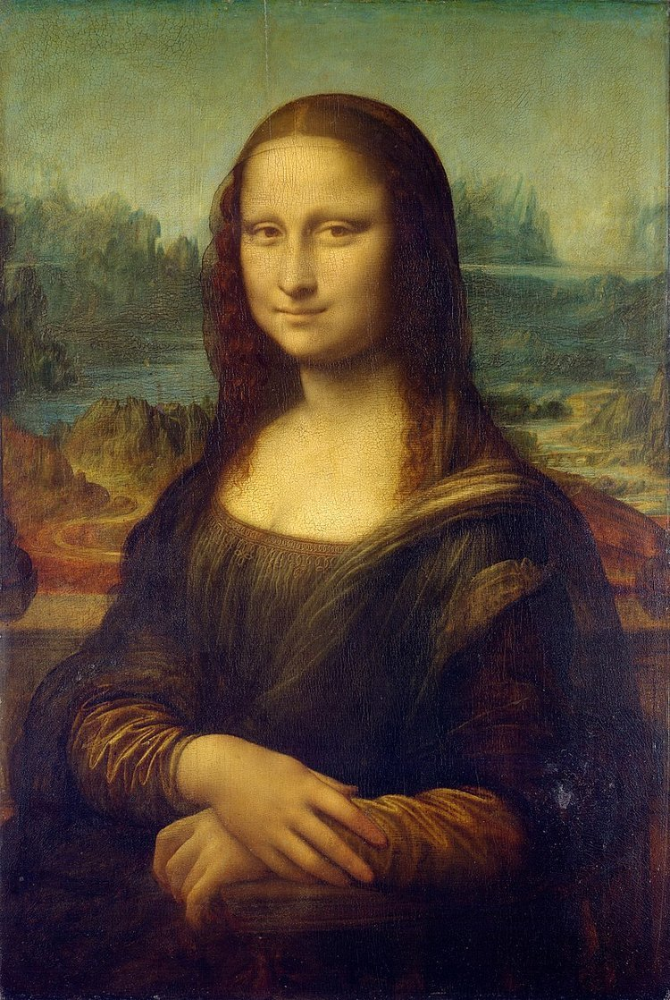

Museum


Welcome to the Old-Time Popular Photos Museum, where history comes alive through the lens of iconic images. Step back in time and explore a carefully curated collection of photographs that capture the essence of different eras, from the early 20th century to the golden age of photography. Each image tells a story, offering a glimpse into the lives, culture, and events that shaped the past. Whether it's vintage portraits, landmark moments, or everyday life, this museum offers a unique opportunity to experience the past as seen through the eyes of those who lived it. Enjoy your journey through time!